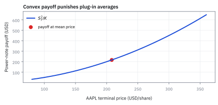
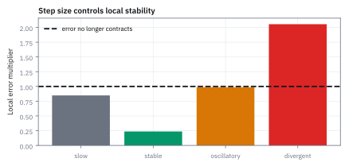

12.7 Algorithms in Practice — Gradient Descent and Newton's Method
gradient descent ต้องเดาขนาดก้าว และความโค้งเป็นตัวกำหนดว่าก้าวไหนเร็ว ก้าวไหนระเบิด ส่วน Newton ให้ความโค้งเลือกก้าวเอง
call บนกระดานราคา \$10.45 ต่อหุ้น (หุ้น \$100 strike \$100 อายุ 1 ปี ดอกเบี้ย 2%) ต้องหา implied volatility คือความผันผวนที่ทำให้สูตรราคาให้ 10.45 พอดี ระบบเริ่มเดาที่ 30% แล้วใช้ gradient descent ขนาดก้าว $\eta=0.0005$ ซึ่งเข้าคำตอบใน 8 ก้าว เทรดเดอร์ใจร้อนเพิ่มเป็น $\eta=0.002$ เพื่อให้เร็วขึ้นสี่เท่า จะเกิดอะไร?
ลองตอบก่อนเปิดเฉลย
ระเบิด σ เดิน 30% → 11.5% → 49.2% → −25.7% ความผันผวนติดลบ สูตรราคาใช้ไม่ได้อีกต่อไป ใกล้คำตอบ error ถูกคูณด้วย $1-\eta f''$ ทุกก้าว และความโค้ง $f''$ ของปัญหานี้ราว 1,527 ขนาดก้าวจึงต้องไม่เกิน $2/1527\approx0.00131$ ส่วน Newton ไม่ต้องเดาขนาดก้าวเลย สองก้าวได้ 23.92363% คลาดแค่ $1.4\times10^{-10}$
สิ่งที่เราจะสร้าง
ทุกหน้าก่อนหน้านี้แก้ได้ด้วยสูตรปิด แต่งานจริงส่วนใหญ่ไม่มีสูตร เช่นการหา implied volatility หรือการ calibrate model เครื่องต้องเดินเข้าหาคำตอบทีละขั้น หน้านี้เปรียบเทียบสองวิธีหลัก: gradient descent ที่ใช้แค่ความชัน (12.2) และ Newton ที่ใช้ความโค้งด้วย (12.3)
เราจะเริ่มจากโจทย์ variance ของพอร์ตใน 12.1 ซึ่งเป็นกำลังสองล้วน จึงเห็นกลไกชัดที่สุด: ก้าวที่พอดี ก้าวที่ระเบิด และ Newton ที่ถึงในก้าวเดียว แล้วย้ายไปหา implied volatility ซึ่งไม่ใช่กำลังสอง ทำตารางการเดินของทั้งสองวิธี ดูว่าทำไม Newton ได้หลักทศนิยมเพิ่มเป็นเท่าตัว ขนาดก้าวไหนทำให้แกว่งและระเบิด และจบที่รั้วกันพังที่ระบบจริงต้องมี
ศัพท์ที่ใช้ในหัวข้อนี้
- Gradient descent
- ก้าวสวนความชันด้วยขนาดก้าว $\eta$ ที่ผู้ใช้เลือก ใช้ได้กับปัญหาหลายตัวแปรมาก เพราะต้องการแค่ความชัน
- Step size (learning rate)
- ตัวคูณ $\eta$ ของความชันในแต่ละก้าว เล็กไปช้า ใหญ่ไปแกว่งหรือระเบิด ค่าที่ใช้ได้ขึ้นกับความโค้งและหน่วย
- Newton's method
- ประมาณ function ด้วยพาราโบลาที่จุดปัจจุบันแล้วกระโดดไปก้นพาราโบลา ใช้ความโค้งเลือกก้าวเอง เร็วมากเมื่อเริ่มใกล้คำตอบ
- Linear / quadratic convergence
- linear คือ error ถูกคูณด้วยตัวเลขคงที่ทุกก้าว quadratic คือ error ใหม่แปรตามกำลังสองของ error เดิม หลักที่ถูกจึงเพิ่มเป็นเท่าตัว
- Implied volatility
- ความผันผวนที่ทำให้สูตรราคา option ให้ราคาเท่าราคาตลาด ใช้แปลงราคาเป็นหน่วยที่เทียบกันได้ข้าม strike และอายุ
- Vega
- อัตราเปลี่ยนของราคา option ต่อความผันผวน เป็นความชันของโจทย์หาราก และเป็นตัวหารของ Newton
สัญลักษณ์และหน่วย
| สัญลักษณ์ | ความหมาย | หน่วย |
|---|---|---|
| $a,\ g(a),\ h$ | น้ำหนักหุ้นบนเส้นลงเงินครบ, variance ของพอร์ต (12.1) และความโค้ง 0.076 | สัดส่วน, return², return² |
| $\eta,\ k$ | ขนาดก้าว และเลขก้าว | ขึ้นกับหน่วยของ $f$, นับ |
| $S,\ K,\ T,\ r$ | ราคาหุ้น strike อายุ และดอกเบี้ยทบต่อเนื่อง | USD, USD, ปี, ต่อปี |
| $\sigma,\ \sigma^\star$ | ความผันผวนที่กำลังลอง และคำตอบ | ทศนิยมต่อปี |
| $C(\sigma),\ C_{\text{mkt}}$ | ราคา call จากสูตร และราคาตลาด | USD ต่อหุ้น |
| $\mathcal V$ | vega คือ $dC/d\sigma$ | USD ต่อหน่วยความผันผวน |
| $f(\sigma)$ | loss $\tfrac12(C-C_{\text{mkt}})^2$ | USD² |
ขั้นที่ 1 — gradient descent บนชามของ 12.1: error ถูกคูณด้วยตัวเลขคงที่
เริ่มจากโจทย์ที่รู้คำตอบ: variance ของพอร์ตหุ้น/พันธบัตรที่ลงเงินครบ $g(a)=0.038a^2-0.008a+0.01$ มีต่ำสุดที่ $a^\star=2/19$ ความชันของกำลังสองเขียนเป็นความโค้งคูณระยะจากคำตอบได้พอดี จึงติดตาม error ได้ตรง ๆ
บรรทัดแรกคือ $0.076(a-0.105263)=0.076a-0.008$ ความชันของกำลังสองเป็นเส้นตรงที่ผ่านศูนย์ตรงคำตอบ บรรทัดที่สามลบ $a^\star$ ออกทั้งสองข้าง ได้ว่า error ใหม่คือ error เดิมคูณ $(1-\eta h)$ ทุกก้าว ไม่ว่าอยู่ตรงไหน
12.1 ใช้ $\eta=10$ ตัวคูณ 0.24 เส้นทางจากหุ้น 100% คือ 1, 0.32, 0.1568, 0.1176, 0.1082 ระยะห่างจาก 0.1053 หดเหลือ 24% ทุกก้าว แบบนี้เรียกว่า linear convergence
ขั้นที่ 2 — ก้าวใหญ่เกิน: แกว่ง แล้วระเบิด
สูตรของขั้นที่ 1 บอกเลยว่าก้าวไหนใช้ได้: ตัวคูณต้องมีขนาดน้อยกว่า 1 ถ้าตัวคูณติดลบ error เปลี่ยนเครื่องหมายทุกก้าวคือกระโดดข้ามคำตอบไปมา
$\eta=20$ กระโดดข้ามทุกครั้งแต่ระยะหดเหลือ 52%: 1, −0.36, 0.3472, −0.0205, 0.1707 ยังเข้าคำตอบ $\eta=30$ กระโดดข้ามแล้วไกลกว่าเดิม 1.28 เท่าทุกก้าว น้ำหนักหุ้นวิ่งไป −177% แล้ว 251% เพดาน 26.3 มาจากความโค้งล้วน ๆ ยิ่งชามแคบ (โค้งมาก) ก้าวที่ปลอดภัยยิ่งเล็ก
ขั้นที่ 3 — Newton: กระโดดไปก้นพาราโบลาที่ประมาณไว้
แทนที่จะเดาขนาดก้าว Newton ประมาณ function รอบจุดปัจจุบันด้วย Taylor อันดับสอง (12.3) แล้วหาจุดต่ำสุดของพาราโบลานั้นตรง ๆ
ก้าวของ Newton คือ gradient descent ที่ใช้ $\eta=1/f''$ พอดี ในหลายตัวแปรคือ $p=-H^{-1}\nabla f$ บนกำลังสองล้วน พาราโบลาที่ประมาณคือ function จริงเป๊ะ Newton จึงถึงคำตอบในก้าวเดียว: ตัวคูณ $1-\eta h$ กลายเป็น $1-1=0$
ถ้า function ไม่ใช่กำลังสอง พาราโบลาเป็นแค่ค่าประมาณ Newton จึงต้องเดินหลายก้าว แต่ใกล้คำตอบค่าประมาณนั้นดีมาก ซึ่งขั้นที่ 7 จะเห็นเป็นตัวเลข
ขั้นที่ 4 — implied volatility: เปลี่ยนราคาเป็นรากและเป็น loss
“หาความผันผวนที่ทำให้ราคาตรงตลาด” เขียนได้สองแบบ: หารากของส่วนต่าง หรือหาจุดต่ำสุดของส่วนต่างยกกำลังสองแล้วหารสอง หา derivative ของ loss ด้วย chain rule เพื่อเชื่อมสองแบบเข้าด้วยกัน
บรรทัดที่สามคือกฎผลคูณของ $g\mathcal V$ ที่คำตอบ $g=0$ พจน์ที่สองหาย ความโค้งจึงเป็น vega² เป๊ะ ใกล้คำตอบก้าวของ Newton บน loss จึงเกือบเท่า $-g/\mathcal V$ ซึ่งคือ Newton สำหรับหาราก: ตามเส้นสัมผัสของราคาไปจนตัดราคาตลาด
สูตรราคาและ vega ยกมาจาก 14.2 และ 14.3 เป็นของที่ให้มา หน้านี้ใช้มันเป็นกล่องที่คำนวณได้ ไม่ได้พิสูจน์ ($\Phi$ และ $\phi$ คือ CDF และ density ของ standard Normal จาก 1.9)
Figure 12.7a — implied volatility คือจุดที่เส้นราคาตัดราคาตลาด

Figure 12.7b — ยกกำลังสองแล้วรากกลายเป็นก้นหุบ

ขั้นที่ 5 — ตัวเลขที่จุดเริ่ม 30%
โจทย์ให้อะไรมาบ้าง: $S=K=100$, $T=1$, $r=0.02$, $C_{\text{mkt}}=10.45$ และ $\sigma_0=0.30$ เนื่องจาก $S=K$ จึงได้ $\ln(S/K)=0$ ค่า $\Phi$ อ่านจากตาราง Normal หรือโค้ดท้ายหน้า
คำตอบ: ที่ 30% สูตรให้ราคาสูงกว่าตลาด \$2.37 จึงต้องลดความผันผวน vega 38.97 แปลว่าความผันผวนขยับ 1 จุด (0.01) ราคาขยับราว \$0.39 ความชันของ loss คือ 92.42
ตรวจเองใน 10 วินาที: $98.019867\times0.466793\approx45.7550$ และ $\phi$ ตัวเล็กคือความสูงของเส้นระฆัง ไม่ใช่พื้นที่: $e^{-0.216667^2/2}/\sqrt{2\pi}=0.976802/2.506628=0.389687$
ขั้นที่ 6 — gradient descent ที่ η = 0.0005: error หดเหลือ 23.6% ทุกก้าว
โจทย์ให้อะไรมาบ้าง: ก้าวแรก $\sigma_1=0.30-0.0005(92.4175)=0.253791$ ทำซ้ำด้วยกฎเดิม คำตอบจริง (หาด้วย bisection จนแคบกว่า $10^{-15}$) คือ $\sigma^\star=0.2392363$
| $k$ | $\sigma_k$ | $C(\sigma_k)$ | ส่วนต่าง | $f'$ | vega |
|---|---|---|---|---|---|
| 0 | 0.300000 | 12.821581 | +2.371581 | +92.4175 | 38.9687 |
| 1 | 0.253791 | 11.018652 | +0.568652 | +22.2110 | 39.0591 |
| 2 | 0.242686 | 10.584792 | +0.134792 | +5.2669 | 39.0746 |
| 3 | 0.240052 | 10.481886 | +0.031886 | +1.2460 | 39.0779 |
| 4 | 0.239429 | 10.457539 | +0.007539 | +0.2946 | 39.0787 |
| 5 | 0.239282 | 10.451783 | +0.001783 | +0.0697 | 39.0789 |
| 6 | 0.239247 | 10.450421 | +0.000421 | +0.0165 | 39.0789 |
คำตอบ: error หดเหลือราว 23.6% ทุกก้าว ตรงกับตัวคูณ $1-\eta f''$ ของขั้นที่ 1 โดย $f''$ คือ vega² ตามขั้นที่ 4 ต้องใช้ 8 ก้าวจึงคลาดไม่เกิน $10^{-6}$ (0.0001 จุดของความผันผวน) vega แทบไม่เปลี่ยนตลอดทาง (38.97 ถึง 39.08) โจทย์นี้จึงเกือบเป็นกำลังสอง
ตรวจเองใน 10 วินาที: แถว 1: ส่วนต่าง 0.568652 คูณ vega 39.0591 ได้ 22.2110 คูณ 0.0005 ได้ 0.011106 จึงไป 0.242686 ส่วน $\eta=0.0005$ ดูเล็กเพราะความชันใหญ่ (92) ขณะที่ระยะที่ต้องเดินแค่ 0.06 ขนาดของ $\eta$ จึงไม่มีความหมายถ้าไม่บอกหน่วยของ $f$
ขั้นที่ 7 — Newton: หลักที่ถูกเพิ่มเป็นเท่าตัว
ใช้ Newton สำหรับหาราก $\sigma_{k+1}=\sigma_k-g(\sigma_k)/\mathcal V(\sigma_k)$ ตามขั้นที่ 4 แล้ววัด error ทุกก้าว
หลักที่ถูกเพิ่มจาก 1 เป็น 4 เป็น 9 นี่คือ quadratic convergence: เส้นสัมผัสพลาดเพราะพจน์อันดับสองของ Taylor ที่ทิ้งไป error ที่เหลือจึงแปรตามกำลังสองของ error เดิม gradient descent ต้องใช้ 8 ก้าวเพื่อ $10^{-6}$ Newton ใช้ 2 ก้าวได้ $10^{-10}$
ก้าวแรกของ Newton คือ gradient descent ที่ $\eta=1/\mathcal V(0.30)^2=1/1518.56=0.000659$ พอดี: $0.000659\times92.4175=0.060859$ ค่า 0.0005 ที่เราเดาจึงเล็กกว่าค่าที่พอดี 24% Newton ให้ความโค้งเลือก $\eta$ ใหม่ทุกก้าว ไม่ต้องจูน
Figure 12.7c — error ของสองวิธีบนสเกล log

ขั้นที่ 8 — ทำให้มันพัง: η = 0.0013 แกว่ง η = 0.002 ระเบิด
ใช้เพดานของขั้นที่ 2 กับความโค้งที่คำตอบ ได้ขนาดก้าวที่ใหญ่ที่สุดที่ยังลู่เข้าได้ แล้วลองสองค่ารอบเพดานนั้น
$\eta=0.0013$ อยู่ใต้เพดานนิดเดียว ตัวคูณคือ $1-1.985=-0.985$ กระโดดข้ามคำตอบไปมาและหดช้ามาก $\eta=0.002$ เกินเพดาน ตัวคูณ −2.05 ทุกก้าวกระโดดไกลขึ้น ความชันพุ่งจาก 92 เป็น −188 เป็น 374 ภายในสามก้าว σ ติดลบ แล้ว $\sigma\sqrt T$ ติดลบทำให้ $d_1$ ไร้ความหมาย โค้ดท้ายหน้าหยุดและรายงานว่าหลุดโดเมนที่ก้าวที่ 3
สรุปตามขนาดก้าว: ต่ำกว่า 0.000655 ($=1/f''(\sigma^\star)$) เดินสั้น ปลอดภัยแต่ช้า ใกล้ 0.000655 เร็วที่สุด ระหว่างนั้นถึง 0.00131 ยิงเลยแล้วเด้งกลับแต่ยังเข้า เกิน 0.00131 ระเบิด
Figure 12.7d — ตัวคูณของ error ที่ขนาดก้าวต่างกัน

ขั้นที่ 9 — รั้วกันพังก่อนเชื่อคำตอบ
ก่อนเดินต้องรู้ว่ามีคำตอบไหม และระหว่างเดินต้องไม่หารด้วยเลขที่ใกล้ศูนย์ ขอบของราคา call คือเมื่อความผันผวนเข้าใกล้ศูนย์และเมื่อโตไม่หยุด
ราคาตลาดต้องอยู่ระหว่างสองขอบ ถ้าต่ำกว่า 1.98 จะไม่มีความผันผวนไหนให้ราคานั้น โปรแกรมต้องตอบว่าราคาผิด ไม่ใช่วนหาไปเรื่อย ๆ และเพราะ vega เป็นบวกตลอด คำตอบมีหนึ่งเดียว bisection ที่ผ่าครึ่งช่วง 1% ถึง 100% จึงรับประกันว่าเจอ แต่ใช้ 20 ก้าวเพื่อความแม่น $10^{-6}$
กับดักของ Newton คือ vega เกือบศูนย์ call ที่ strike 160 ราคา \$0.4443 (ความผันผวนจริง 25%) ถ้าเริ่มเดาที่ 5% vega เหลือ $1.3\times10^{-16}$ ก้าวของ Newton ยาวราว $3.45\times10^{15}$ โค้ดท้ายหน้าปฏิเสธก้าวนี้ ถ้าเริ่มที่ 60% แทน Newton เดิน 0.346, 0.275, 0.253, 0.2501 แล้วถึง 0.25 ใน 6 ก้าว
คำถามที่ควรถามออกมาดัง ๆ
Newton เร็วกว่าขนาดนี้ ทำไมไม่ใช้ทุกครั้ง? Newton ต้องการความโค้ง ที่นี่คือ vega ตัวเดียวซึ่งสูตรให้ฟรี แต่ถ้าปรับ 500 parameter พร้อมกัน Hessian มี 250,000 ช่อง และต้องแก้ระบบเชิงเส้นทุกก้าว อีกทั้งถ้าเริ่มไกล เส้นสัมผัสพาหลุดได้แบบขั้นที่ 9 งาน machine learning จึงใช้ gradient descent และตัวแปรของมัน ส่วนงาน implied volatility ใช้ Newton ที่มีรั้ว
ขนาดก้าวที่ดีขึ้นกับอะไร? ขึ้นกับความโค้ง ซึ่งขึ้นกับหน่วย ถ้าเปลี่ยนราคาเป็นเซนต์ loss โต $100^2$ เท่า ความโค้งโตตาม เพดานของ $\eta$ เหลือ $1.31\times10^{-7}$ ส่วนก้าวของ Newton $-g/\mathcal V$ ไม่เปลี่ยนเลย เพราะหน่วยตัดกันเอง
กับดัก: ยก η จากโจทย์หนึ่งไปอีกโจทย์ และหยุดผิดเวลา
$\eta=0.0005$ ใช้ได้เพราะความโค้งราว 1,527 ถ้าหุ้นราคา 1,000 แทน 100 vega โตสิบเท่า ความโค้งโตร้อยเท่า $\eta$ เดิมเกินเพดานทันที ต้องคำนวณเพดาน $2/f''$ ใหม่ทุกโจทย์ หรือใช้วิธีที่ปรับก้าวเอง
อย่าหยุดเพราะก้าวสั้นอย่างเดียว gradient descent ที่ $\eta$ เล็กมากก้าวสั้นตลอดทั้งที่ยังไกลคำตอบ ให้ตรวจส่วนต่างราคาด้วย เช่น $|C(\sigma)-10.45|\lt0.0001$ และอย่าปล่อย Newton หารด้วย vega ใกล้ศูนย์โดยไม่มีช่วงคร่อมคำตอบคอยกันไว้
ใช้ทำอะไรบนโต๊ะจริง
หน้าจอ option ทุกจอแปลงราคาเป็น implied volatility หลายพันครั้งต่อวินาทีด้วย Newton ที่มีรั้ว: เริ่มจากค่าเดาที่สมเหตุสมผล ตรวจขอบ arbitrage ก่อน จำกัด σ ไว้ในช่วง และถ้าก้าวของ Newton ออกนอกช่วงคร่อมก็ถอยไปใช้ bisection วิธีมาตรฐานอย่าง Brent's method ก็คือการผสม bisection กับการประมาณด้วยเส้นโค้งแบบนี้
การ calibrate model ที่มีหลาย parameter (21.2) ใช้กลไกเดียวกันในหลายมิติ และปัญหาเดียวกัน: ความโค้งต่างกันมากในแต่ละทิศ (หลุมแบนไม่เท่ากันแบบ B ใน 12.3) ขนาดก้าวที่ปลอดภัยในทิศหนึ่งจึงช้ามากในอีกทิศ
สามโจทย์ตรวจความเข้าใจ
1. บนชามของขั้นที่ 1 ขนาดก้าวคงที่ค่าไหนเร็วที่สุด และถ้าใช้ $\eta=20$ เริ่มที่ 1 หลังสี่ก้าวห่างคำตอบเท่าไร?
เฉลย
เร็วที่สุดเมื่อตัวคูณเป็นศูนย์: $\eta=1/h=1/0.076\approx13.16$ ถึงในก้าวเดียว ซึ่งคือ Newton ที่ $\eta=20$ ตัวคูณ −0.52 error เริ่ม $1-2/19=0.894737$ หลังสี่ก้าว $0.52^4\times0.894737\approx0.06542$ ตรงกับ $a_4=0.170683$ ลบ 0.105263
2. ถ้าราคาตลาดของ call เดียวกันเป็น \$8.00 ใช้ Newton จาก 30% หา implied volatility
เฉลย
ขอบ 1.98 ถึง 100 ผ่าน ก้าวแรก $0.30-(12.821581-8)/38.9687=0.30-0.12373=0.176270$ ก้าวที่สอง 0.176572 ก้าวที่สามเปลี่ยนแค่หลักที่ 9 คำตอบ 17.6572% ก้าวแรกยาวกว่าโจทย์ในหน้าเพราะส่วนต่างราคาใหญ่กว่าสองเท่า
3. ถ้าวัดราคาเป็นเซนต์แทนดอลลาร์ เพดานขนาดก้าวของ gradient descent และก้าวของ Newton เปลี่ยนอย่างไร?
เฉลย
loss $\tfrac12g^2$ โต $100^2=10{,}000$ เท่า ความโค้งจึงโต 10,000 เท่า เพดาน $2/f''$ เหลือ $0.00131/10{,}000\approx1.31\times10^{-7}$ ส่วน Newton ใช้ $g/\mathcal V$ ซึ่งทั้งเศษและส่วนโต 100 เท่า ก้าวจึงเท่าเดิม นี่คือเหตุผลที่ Newton ไม่ต้องจูน
คำนวณซ้ำด้วย JavaScript
รันใน Node.js ได้โดยไม่ติดตั้งแพ็กเกจ โค้ดคำนวณ $\Phi$ ด้วย Simpson ตรวจขอบ arbitrage ก่อนเริ่ม เดิน gradient descent โดยหยุดและรายงานเมื่อ σ หลุดโดเมน เดิน Newton โดยปฏิเสธก้าวที่ vega เกือบศูนย์ หาคำตอบอ้างอิงด้วย bisection และเดินชามของ 12.1 ด้วยขนาดก้าวต่าง ๆ แล้วพิมพ์ผลเป็น JSON บรรทัดเดียว
const phi = x => Math.exp(-x * x / 2) / Math.sqrt(2 * Math.PI);
// Standard Normal CDF by Simpson's rule on [0, |x|]; enough intervals for 1e-12 accuracy here.
function Phi(x) {
if (!Number.isFinite(x)) throw new RangeError('Phi needs a finite argument');
const n = 2 * Math.ceil(500 * Math.max(1, Math.abs(x))), h = Math.abs(x) / n;
let sum = 0;
for (let i = 0; i <= n; i++) sum += (i === 0 || i === n ? 1 : i % 2 ? 4 : 2) * phi(i * h);
const half = sum * h / 3;
return Math.min(1, Math.max(0, x >= 0 ? 0.5 + half : 0.5 - half));
}
// Black-Scholes call and vega (taken as given from 14.2 and 14.3).
function bs(sigma, {S = 100, K = 100, r = 0.02, T = 1} = {}) {
if (!(Number.isFinite(sigma) && sigma > 0)) throw new RangeError('Volatility must be positive');
const d1 = (Math.log(S / K) + (r + sigma * sigma / 2) * T) / (sigma * Math.sqrt(T)), d2 = d1 - sigma * Math.sqrt(T);
return {d1, d2, price: S * Phi(d1) - K * Math.exp(-r * T) * Phi(d2), vega: S * phi(d1) * Math.sqrt(T)};
}
function checkQuote(quote, opts = {}) {
const {S = 100, K = 100, r = 0.02, T = 1} = opts, low = Math.max(S - K * Math.exp(-r * T), 0);
if (!(quote > low && quote < S)) throw new RangeError(`Price outside no-arbitrage bounds (${low.toFixed(6)}, ${S})`);
return low;
}
// Gradient descent on f = (C - quote)^2 / 2; stops if sigma leaves the positive axis.
function descend(quote, sigma0, eta, steps, opts = {}) {
checkQuote(quote, opts);
if (!(eta > 0)) throw new RangeError('Step size must be positive');
const path = [sigma0];
for (let k = 0; k < steps; k++) {
const {price, vega} = bs(path[k], opts), next = path[k] - eta * (price - quote) * vega;
path.push(next);
if (!(next > 0)) return {path, leftDomainAt: k + 1};
}
return {path, leftDomainAt: null};
}
function newton(quote, sigma0, steps, opts = {}) {
checkQuote(quote, opts);
const path = [sigma0];
for (let k = 0; k < steps; k++) {
const {price, vega} = bs(path[k], opts);
if (vega < 1e-8 * (opts.S ?? 100)) throw new RangeError(`Vega too small at sigma = ${path[k]}: Newton step unsafe, bracket first`);
path.push(path[k] - (price - quote) / vega);
}
return path;
}
function bisect(quote, lo, hi, tol, opts = {}) {
checkQuote(quote, opts);
let steps = 0;
while (hi - lo > tol) { const mid = (lo + hi) / 2; if (bs(mid, opts).price > quote) hi = mid; else lo = mid; steps++; }
return {root: (lo + hi) / 2, steps};
}
const quote = 10.45, start = bs(0.30), root = bisect(quote, 0.01, 1, 1e-15).root;
const curvature = bs(root).vega ** 2; // f'' at the root
const gd = descend(quote, 0.30, 0.0005, 40), nt = newton(quote, 0.30, 3);
let stepsTo1e6 = 0;
while (Math.abs(gd.path[stepsTo1e6] - root) >= 1e-6) stepsTo1e6++;
// The chapter's quadratic: variance on the budget line, g'(a) = 0.076 a - 0.008.
const quad = eta => { const p = [1]; for (let k = 0; k < 4; k++) p.push(p[k] - eta * (0.076 * p[k] - 0.008)); return p; };
const otm = {K: 160}, otmQuote = bs(0.25, otm).price;
let otmRefusal = null;
try { newton(otmQuote, 0.05, 3, otm); } catch (error) { otmRefusal = error.message; }
console.log(JSON.stringify({
start: {...start, gap: start.price - quote, slope: (start.price - quote) * start.vega},
root, vegaAtRoot: bs(root).vega, curvature, factor: 1 - 0.0005 * curvature, etaMax: 2 / curvature, etaNewton: 1 / start.vega ** 2,
gdTable: gd.path.slice(0, 7).map(s => { const b = bs(s); return [s, b.price, b.price - quote, (b.price - quote) * b.vega, b.vega]; }),
ratios: [1, 2, 3, 4, 5].map(k => (gd.path[k] - root) / (gd.path[k - 1] - root)), stepsTo1e6,
newton: nt, newtonErrors: nt.map(s => s - root),
oscillate: descend(quote, 0.30, 0.0013, 6).path, blowUp: descend(quote, 0.30, 0.002, 6),
bounds: [checkQuote(quote), 100], bisection: bisect(quote, 0.01, 1, 1e-6),
quadratic: {eta10: quad(10), eta30: quad(30), eta20: quad(20), newton: 1 - (0.076 - 0.008) / 0.076, etaMax: 2 / 0.076},
otm: {quote: otmQuote, vegaAt5: bs(0.05, otm).vega, priceAt5: bs(0.05, otm).price, refusal: otmRefusal, fromSixty: newton(otmQuote, 0.60, 6, otm)},
exercises: {quote8: newton(8, 0.30, 5), centsEtaMax: 2 / (curvature * 1e4)}
}));ที่มาที่ไป
Isaac Newton บรรยายวิธีแก้รากของพหุนามแบบค่อย ๆ ปรับไว้ราวปี 1669 และ Joseph Raphson เขียนเป็นขั้นตอนที่ใช้ซ้ำได้ง่ายในปี 1690 จึงเรียกว่า Newton–Raphson Augustin-Louis Cauchy เสนอการก้าวสวนความชันในปี 1847 ทั้งสองวิธีเกิดก่อนคอมพิวเตอร์นาน แต่กลายเป็นเครื่องยนต์หลักของงานคำนวณทางการเงินเมื่อสูตรราคาอย่าง Black–Scholes ต้องถูกกลับด้านเป็นล้านครั้งต่อวัน
ข้อจำกัด: หน้านี้สมมติอะไร และของจริงเป็นอย่างไร
| เรื่อง | หน้านี้สมมติว่า | ของจริง | ผลเวลาใช้งาน |
|---|---|---|---|
| จุดเริ่ม | เริ่มที่ 30% ใกล้คำตอบ | option ไกล strike มาก vega เกือบศูนย์ | ต้องเดาจุดเริ่มดี ๆ และมีช่วงคร่อม |
| ความเรียบ | สูตรราคาเรียบ หา derivative ได้ | ราคาตลาดปัดเป็นขั้น และมี bid–ask | ตอบเป็นช่วงของ implied volatility ไม่ใช่ตัวเลขเดียว |
| จำนวนตัวแปร | ตัวแปรเดียว | calibrate หลายสิบ parameter | Hessian แพง ต้องใช้วิธีประมาณความโค้ง |
| สูตรราคา | Black–Scholes ไม่มีเงินปันผล ใช้สิทธิ์ตอนหมดอายุ | มีเงินปันผล และ option แบบใช้สิทธิ์ก่อนได้ | ต้องเปลี่ยนสูตร แต่กลไกการเดินเหมือนเดิม |
สิ่งที่ควรตอบได้หลังอ่าน
- ใกล้คำตอบ gradient descent คูณ error ด้วย $1-\eta f''$ ทุกก้าว: ชามของ 12.1 ที่ $\eta=10$ ได้ 0.24 implied volatility ที่ $\eta=0.0005$ ได้ 0.2364
- ขนาดก้าวต้องต่ำกว่า $2/f''$: 26.3 บนชาม 0.00131 บนปัญหา implied volatility เกินแล้วระเบิด ($\sigma$ ไปถึง −25.7% ใน 3 ก้าว)
- Newton คือ gradient descent ที่ $\eta=1/f''$ ถึงในก้าวเดียวบนกำลังสอง และได้หลักเพิ่มเป็นเท่าตัวบนปัญหาทั่วไป: 23.92363% ใน 2 ก้าว
- ต้องมีรั้ว: ตรวจขอบ arbitrage (1.98 ถึง 100) ห้ามหารด้วย vega ใกล้ศูนย์ และมี bisection สำรอง (20 ก้าว แต่ไม่พัง)
12.8 กลับมาที่พอร์ต แล้วเพิ่มสิ่งที่ทุกหน้าก่อนหน้านี้ละไว้: การย้ายพอร์ตมีต้นทุน และต้นทุนแบบคิดเป็นสัดส่วนของการซื้อขายทำให้บางครั้งคำตอบที่ดีที่สุดคือไม่เทรดเลย